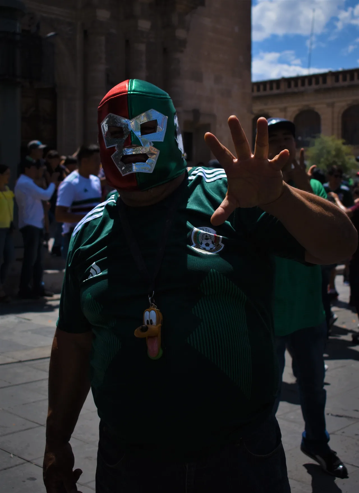

La máscara de lucha libre cruza el taller, el cuadrilátero y la calle. También puede convertirse en un nombre que otro posee.
Una fotografía muestra varias máscaras de lucha libre expuestas en Mission District, San Francisco. No es una escena de una arena mexicana ni una prueba sobre el taller donde se cosieron. Precisamente por eso resulta útil: el objeto viajó más lejos que la función para la que fue hecho. Otra imagen, tomada en Chihuahua durante una celebración del Mundial de fútbol de 2018, registra a una persona que lleva una máscara fuera de un combate. Entre ambas fotos hay un recorrido que merece seguirse. Una tela diseñada para identificar a alguien sobre un cuadrilátero puede circular como mercancía, recuerdo, disfraz o declaración de pertenencia. Cada uso cambia algo de su sentido, aunque conserve los mismos ojos recortados. [7][8]

La máscara profesional no se reduce a ocultar la cara. Debe permitir ver, respirar y moverse durante un trabajo físico, y a la vez mantener reconocible al personaje a distancia. Se fabrica para un cuerpo particular y para una mirada colectiva. Es prenda, imagen y nombre a la vez. Conviene empezar por esa simultaneidad, porque de otro modo todo se vuelve alegoría: la capucha acaba representando una supuesta esencia de México y desaparecen la persona que la cose, la que la usa, la empresa que la promociona y el público que aprende a leerla. Las fuentes disponibles permiten describir esas relaciones, aunque no autorizan a inventar el interior de un taller ni la biografía de un luchador anónimo. [1][2]
Una cara que se fabrica
La historia de la primera máscara mexicana suele contarse como una escena cerrada: un zapatero recibe a un extranjero, mide una cabeza y funda una tradición. Los documentos ofrecen una versión menos lisa. Un trabajo de la UNAM sitúa a Antonio Martínez, zapatero llegado de León a la Ciudad de México, en la fabricación de botas para luchadores antes del encargo de Cyclone MacKay. La misma investigación recoge que su primer intento de máscara no quedó como esperaba y que fue necesario ajustar la solución. UNAM Global presenta la atribución a Martínez como presunta y fecha el debut de La Maravilla Enmascarada en México el 21 de septiembre de 1934. La diferencia entre una tradición oral, una atribución y una fecha documentada merece conservarse. [1][2]
No existe un instante en que una persona inventa, de una vez y para siempre, todas las máscaras posteriores. Hubo una solución inicial, luchadores que la probaron, públicos que reconocieron sus posibilidades y fabricantes que modificaron materiales y ajustes. El Murciélago Enmascarado, activo desde 1938 según la síntesis de la UNAM, ayudó a convertir la capucha en un elemento sostenido del personaje. El antecedente norteamericano de The Masked Marvel aparece en la tesis sobre teatro ritual: el recurso ya había existido en otros circuitos, pero no adquirió el mismo lugar en todos. La pregunta fértil no es quién poseyó la primera idea abstracta de taparse el rostro, sino cómo una prenda llegó a ordenar una relación duradera entre intérprete y afición. [1][2]
El cambio material impide hablar de «la» máscara como si todos los ejemplares tuvieran la misma estructura. La tesis de la UNAM describe modelos de licra construidos con cuatro piezas y recuerda el uso anterior de la piel. Una entrevista publicada por el Instituto de Investigaciones Estéticas registra que el luchador conocido como La Máscara encargaba atuendos con telas importadas por razones de resistencia; también describe un acolchado alrededor de los ojos. Son casos situados, no una receta universal. No podemos deducir de ellos que toda capucha profesional tenga tres capas, una horma de madera, una aguja determinada o un cierre idéntico. Esas precisiones exigirían observar prendas concretas y hablar con quienes las hacen. [2][4]
Hay, sin embargo, problemas de diseño que los ejemplos dejan ver. La abertura ocular debe repartir dos exigencias que no siempre coinciden: ofrecer visión durante el combate y conservar la expresión del personaje. La tela necesita seguir a una cabeza que gira y recibe tracción sin convertir cada movimiento en una amenaza para la respiración. Las superficies que brillan bajo la iluminación de una arena no tienen por qué ser las que mejor toleran el uso repetido. Un patrón puede resolver una anatomía y fallar en otra. Son preguntas que se pueden formular desde el objeto; el rendimiento de una prenda particular solo puede afirmarse después de examinarla o de escuchar a su usuario. [2][4]
El rostro gráfico tampoco se añade al final como una calcomanía. Distribuir un color alrededor de los ojos, marcar una boca o introducir un signo en la frente cambia cómo se reconoce una figura cuando el cuerpo se mueve, cuando la distancia aumenta o cuando la imagen se reduce a una portada. La tesis de 2013 distingue la base cromática de las piezas que delinean aberturas y símbolos. Esa descripción mínima permite ver una operación compleja: la cara tiene que seguir siendo la misma en el salto, en el cartel y en el recuerdo del espectador. El diseño no anula la destreza atlética; hace que esa destreza pertenezca a alguien identificable. [2]
Una infografía de Gaceta UNAM distingue máscaras de juguete, profesionales y de colección. Sus materiales, usos y precios aparecen diferenciados; esos precios corresponden al momento de la publicación y no sirven como tarifa actual. La distinción sí conserva valor. Una réplica vendida al salir de una función puede resolver la identificación visual con pocos recursos; la prenda que se lleva a combatir tiene otras exigencias; una pieza guardada tras una lucha adquiere valor por su historia. Llamarlas a todas «artesanales» borra diferencias de fabricación y de circulación. También oculta la pregunta comercial: ¿quién gana cuando una cara reconocible puede reproducirse cientos de veces? [3]
La fabricación tiene autoría aunque la fama recaiga en quien sube al ring. La síntesis de Gaceta UNAM identifica al mascarero como alguien que diseña y hace parte de la indumentaria del personaje. Pero no basta con añadir una línea romántica sobre «manos invisibles»: faltan datos sobre encargos, tiempos, pagos y derechos de diseño en los casos concretos. La máscara es visible precisamente porque su fabricante logra que la costura desaparezca del primer golpe de vista. La investigación editorial debería devolverle nombre y condiciones a ese trabajo. Mientras no haya una entrevista o un archivo de taller, es más honesto describir esa ausencia que poblarla con el retrato de un artesano imaginario. [3]
El personaje tiene una biografía
El Santo permite seguir un caso con documentación pública. La ficha del Sistema de Información Cultural identifica a Rodolfo Guzmán Huerta, nacido en Tulancingo en 1917, y registra su carrera como luchador y actor. Antes de fijar el nombre de El Santo pasó por otras denominaciones; en 1942 adoptó la que terminó definiendo al personaje. La misma ficha recuerda que comenzó en el bando rudo y luego pasó al técnico. Estos cambios bastan para cuestionar la idea de una identidad revelada de golpe por una capucha plateada. El personaje fue una construcción sostenida por decisiones, actuaciones y medios de circulación. [6]
El reconocimiento tampoco dependió solo de la arena. La ficha cultural registra la historieta iniciada en 1952 y la extensa carrera cinematográfica que comenzó en 1958. Sobre una página impresa o en una pantalla, la máscara resolvía otro problema: permitir reconocer al héroe sin exigir que cada lector o espectador hubiera asistido antes a una lucha. Su superficie uniforme funcionaba como un punto de continuidad entre relatos diferentes. No conviene exagerar esa operación hasta convertirla en una explicación única de la fama. Importaban también los combates, los editores, los productores, la distribución y la respuesta del público. La máscara facilitaba el tránsito, no lo hacía sola. [6]
La historia televisiva del rostro de El Santo muestra por qué hace falta cuidado con las escenas famosas. La ficha del Sistema de Información Cultural dice que en el programa Contrapunto, conducido por Jacobo Zabludovsky, se vio una pequeña parte de su rostro. No sustenta que hubiera sucedido exactamente una semana antes de su muerte, que durara tres segundos o que se tratara de una despedida planeada. Tampoco permite reconstruir lo que pensaron millones de televidentes. En una cultura organizada alrededor de la incógnita, un fragmento de cara podía volverse noticia; el resto de la escena no debe escribirse como si el narrador hubiera estado allí con un cronómetro y acceso a las intenciones privadas del luchador. [6]
Ese límite importa porque la máscara no se comporta igual para todos los portadores. La entrevista de La Máscara publicada por la UNAM ofrece un desacuerdo útil con la retórica de la muerte simbólica. El luchador explica que perder la capucha no tendría por qué obligarlo a cambiar de nombre o de bando; tendría que demostrar su calidad con ella o sin ella. El artículo de UNAM Global, en cambio, recoge a un investigador para quien la pérdida puede vivirse como duelo y afectar la posición pública del personaje. Las dos perspectivas no se cancelan. Una habla desde la experiencia y la intención de un luchador; la otra analiza una consecuencia que puede variar entre carreras. El ensayo debe dejar abierto ese margen. [1][4]
La llamada lucha de apuestas organiza la pérdida como acontecimiento. El objeto que durante años reservó un rostro puede convertirse en lo que se arriesga ante una multitud. Pero el combate no transforma automáticamente al vencido en una persona sin futuro. Esa imagen ofrece drama y poca comprensión. Interesa más preguntar qué sucede después: si conserva el nombre, qué trabajo puede conseguir, cómo lo presenta una cartelera, qué parte de su historia reconoce el público y qué oportunidades pierde o gana. La respuesta cambia con cada trayectoria. Lo que se pone en juego no es solo una tela, sino el conjunto de asociaciones que esa tela ayudó a acumular. [1][2][4]
Aquí la máscara revela una condición material del reconocimiento. La afición aprende un nombre y unas formas; el luchador sostiene ese nombre con el cuerpo, las lesiones, los desplazamientos y el tiempo de entrenamiento. Si deja de ser programado, el signo permanece quizá en fotografías o artículos, pero la continuidad profesional se debilita. Un análisis laboral publicado por UNAM Global en 2026 describe la diferencia entre grandes empresas y circuitos independientes, la variabilidad de fechas de trabajo y los acuerdos verbales que pueden acompañar una función. La imagen del héroe no desaparece al hablar de empleo. Se vuelve más precisa, porque alguien debe poder seguir trabajando para sostenerla. [5]
La investigación de la UNAM distingue también posiciones dentro de una cartelera: no reciben las mismas oportunidades quienes abren una función y quienes la estelarizan. El valor de una máscara, por tanto, no puede atribuirse exclusivamente a su dibujo. Depende de cuántas veces se vea, dónde aparezca, qué relatos se construyan alrededor de ella y qué espacio obtenga quien la porta. Ser reconocible desde lejos ayuda; no sustituye una programación, un contrato ni la protección frente a una lesión. Preguntar por esas condiciones evita que el diseño se convierta en una explicación mágica de la vida profesional de otra persona. [5]
La propiedad introduce otra pregunta, menos fotogénica y más decisiva. Según el análisis de UNAM Global, nombre, máscara y elementos de identificación pueden estar sujetos a registros y acuerdos que no siempre dejan los derechos en manos del intérprete. Reservas de derechos sobre personajes y nombres artísticos, y registros de marca, son figuras distintas. Su existencia no resuelve por sí sola una disputa concreta, pero muestra que una cara fabricada puede convertirse en un activo comercial. Quien invirtió años en darle sentido quizá no sea quien controle todas sus reproducciones. La costura queda así conectada con expedientes, contratos y capacidad de negociación. [5]
No hace falta convertir esa tensión en una parábola donde toda empresa explota y todo luchador carece de agencia. Los acuerdos pueden variar; también pueden cambiar los objetivos de quien acepta interpretar un personaje o encargar una indumentaria. La pregunta editorial es más exacta: ¿quién puede usar la imagen, en qué soportes, durante cuánto tiempo y con qué beneficio para quien trabaja en ella? Una máscara vendida como juguete, impresa en una camiseta o incluida en una campaña publicitaria ya no vive únicamente de la función original. Cada reproducción prolonga el alcance del personaje y abre una discusión sobre su control. [3][5]
La cara sale a la calle

Las dos fotografías de este ensayo muestran esa salida, con límites claros. En San Francisco, un conjunto de máscaras se ofrece lejos del circuito mexicano que hizo reconocible su forma. La foto no prueba de dónde procede cada pieza ni quién la compró; sí muestra que la imagen se deja identificar en otro contexto comercial. En Chihuahua, una máscara aparece sobre la cabeza de una persona que celebra un partido de fútbol. Tampoco sabemos si esa persona sigue la lucha libre o qué significado privado atribuye al objeto. Podemos observar una transferencia de contexto, no una biografía completa de la imagen. [7][8]
Ese desplazamiento cambia la relación entre anonimato y reconocimiento. Dentro del ring, la máscara distingue a un personaje particular y reserva la identidad civil del intérprete. Fuera, alguien puede llevar una réplica precisamente para ser visto como aficionado, para participar en una fiesta o para entrar en un juego de identidades compartidas. La cara se tapa y, al mismo tiempo, el portador se vuelve más legible dentro de un grupo. La aparente contradicción no se resuelve diciendo que «todos desean ser otro». Basta mirar cómo el mismo recurso gráfico admite acuerdos sociales diferentes según el lugar y el momento. [1][7][8]
La comparación con las máscaras rituales de otras tradiciones merece la misma cautela. Un artículo de UNAM Global recoge posibles vínculos simbólicos con prácticas indígenas contemporáneas; el Instituto Nacional de Antropología e Historia describe la transformación de quien porta una máscara en ceremonias y fiestas específicas. Se puede reconocer que ambos objetos producen identidades públicas sin declarar una línea continua y demostrada entre un tocado prehispánico, la noción de nahual y una capucha cosida para la Arena México. La semejanza visual no constituye una genealogía. Cada práctica tiene sus fabricantes, reglas, públicos y conflictos. [1][9]
La máscara de lucha libre gana interés cuando se la deja conservar esa historia moderna. Surgió en relación con un espectáculo urbano del siglo XX, con talleres capaces de modificar una prenda de combate y con medios que ampliaron el alcance de algunos personajes. También se alimentó de repertorios visuales disponibles en México y fuera de él. No necesita una antigüedad sagrada para importar. Insistir en que todo diseño mexicano auténtico debe remontarse a un pasado ancestral puede negar el trabajo inventivo de quienes respondieron a encargos recientes, materiales industriales y cambios en la manera de mirar una función. [1][2][6]
El debate sobre identidad tampoco se agota en la oposición de técnicos y rudos. UNAM Global muestra un repertorio de figuras que incluye referencias a la muerte, al payaso, a imaginarios heroicos y a formas más sobrias de identificación. La relación entre nombre, colores y conducta se aprende con la trayectoria, no con una tabla universal que obligue al héroe a llevar líneas ascendentes y al villano a usar colmillos. Una misma forma puede cambiar de sentido si cambia quien la lleva o si el público responde de otro modo. El signo no manda sobre el combate; entra en conversación con él. [1]
También cambian los cuerpos que pueden ocupar el centro de la escena. La investigación laboral de la UNAM señala barreras para luchadoras, minis y luchadores exóticos en el acceso a posiciones destacadas. La máscara podría ofrecer visibilidad, pero no corrige por sí sola las decisiones de programación que distribuyen prestigio e ingresos. Preguntar quién puede convertirse en rostro memorable de una cartelera permite ampliar el análisis del diseño. No basta estudiar las piezas más famosas si las condiciones del espectáculo dejan otras identidades en los márgenes. La colección de objetos debe dialogar con una historia de oportunidades desiguales. [5]
En ese punto, la máscara deja de ser un símbolo cómodo. Permite imaginar una persona, pero está hecha por otra; ayuda a construir un nombre, pero puede quedar inscrita a nombre de alguien distinto; circula como imagen libremente reconocible, pero sus usos pueden estar sujetos a derechos. La prenda existe dentro de esas tensiones, no por encima de ellas. Su capacidad de emocionar a un público no disminuye cuando se pregunta por taller, contrato o distribución. Al contrario: solo entonces se ve cuántas decisiones concretas hicieron posible la emoción. [3][5]
Quedaría por seguir una pieza de principio a fin. Harían falta un encargo identificado, un patrón o registro de fabricación, la voz del mascarero, la experiencia del luchador que la usa, fotografías de varias funciones y documentos sobre su reproducción comercial. Nada de eso está reunido aquí en un solo caso. Las fuentes consultadas permiten componer una lectura de relaciones históricas, técnicas y laborales; no autorizan a describir cómo se ajusta cada máscara actual ni a decir qué siente un luchador al quitársela. Ese límite no empobrece el ensayo. Indica dónde empezaría una investigación propia de RUMMOR. [2][4][5]
La foto de Chihuahua devuelve la pregunta al lugar más sencillo. Hay una cabeza cubierta y un cuerpo que participa de una celebración; no vemos el taller ni el contrato ni la arena. Pero ahora sabemos que esas ausencias importan. La máscara no convierte automáticamente a quien la lleva en héroe, ni se vuelve trivial porque haya salido del ring. Es un objeto capaz de reunir un oficio, una carrera, un negocio y un gesto pasajero en la calle. Mirarla bien exige no elegir demasiado pronto cuál de esas vidas es la verdadera. [8]
Fuentes.
- UNAM Global, «La máscara en la lucha libre: cuando el personaje se vuelve identidad», 2026.
- Tesis de la UNAM, *La lucha libre como teatro ritual*, 2013, especialmente pp. 26–28.
- Gaceta UNAM, «Máscara luchada», infografía.
- Instituto de Investigaciones Estéticas, UNAM, entrevista a La Máscara.
- UNAM Global, «Lo que no se ve en el ring: los riesgos y el precio de ser luchador en México», 2026.
- Sistema de Información Cultural, Secretaría de Cultura de México, ficha de El Santo.
- Wikimedia Commons, máscaras fotografiadas por Jonathan McIntosh en Mission District, San Francisco.
- Wikimedia Commons, fotografía de Octavio Bonilla tomada en Chihuahua durante el Mundial de fútbol de 2018.
- Instituto Nacional de Antropología e Historia, «Máscaras: personificaciones rituales», 2023.


Ensayo documental. Las imágenes ilustran circulación y uso fuera del cuadrilátero; no documentan la confección de una máscara específica.
Fuentes consultadas el 19.11.2026. Análisis e interpretación: RUMMOR. Edición privada para revisión.